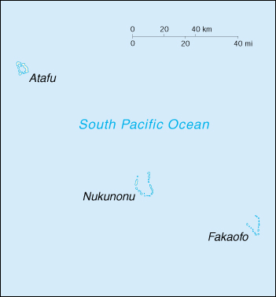

(territory of New Zealand)

|
Tokelau (territory of New Zealand) |
|
| Introduction Geography People Government Economy Communications Transportation Military Transnational Issues | ||
|  | ||
| Tokelau | Introduction | Top of Page |
| Background: | Originally settled by Polynesian emigrants from surrounding island groups, the Tokelau Islands were made a British protectorate in 1889. They were transferred to New Zealand administration in 1925. According to a UN report, these low-lying islands will disappear in the 21st century, if global warming continues to raise sea levels. |
| Tokelau | Geography | Top of Page |
| Location: | Oceania, group of three islands in the South Pacific Ocean, about one-half of the way from Hawaii to New Zealand |
| Geographic coordinates: | 9 00 S, 172 00 W |
| Map references: | Oceania |
| Area: |
total:
10 sq km
land: 10 sq km water: 0 sq km |
| Area - comparative: | about 17 times the size of The Mall in Washington, DC |
| Land boundaries: | 0 km |
| Coastline: | 101 km |
| Maritime claims: |
exclusive economic zone:
200 NM
territorial sea: 12 NM |
| Climate: | tropical; moderated by trade winds (April to November) |
| Terrain: | low-lying coral atolls enclosing large lagoons |
| Elevation extremes: |
lowest point:
Pacific Ocean 0 m
highest point: unnamed location 5 m |
| Natural resources: | NEGL |
| Land use: |
arable land:
0% (soil is thin and infertile)
permanent crops: 0% permanent pastures: 0% forests and woodland: 0% other: 100% (1993 est.) |
| Irrigated land: | NA sq km |
| Natural hazards: | lies in Pacific typhoon belt |
| Environment - current issues: | very limited natural resources and overcrowding are contributing to emigration to New Zealand |
| Tokelau | People | Top of Page |
| Population: | 1,445 (July 2001 est.) |
| Age structure: |
0-14 years:
NA%
15-64 years: NA% 65 years and over: NA% |
| Population growth rate: | -0.92% (2001 est.) |
| Birth rate: | NA births/1,000 population |
| Death rate: | NA deaths/1,000 population |
| Net migration rate: | NA migrant(s)/1,000 population |
| Infant mortality rate: | NA deaths/1,000 live births |
| Life expectancy at birth: |
total population:
NA years
male: NA years female: NA years |
| Total fertility rate: | NA children born/woman |
| HIV/AIDS - adult prevalence rate: | NA% |
| HIV/AIDS - people living with HIV/AIDS: | NA |
| HIV/AIDS - deaths: | NA |
| Nationality: |
noun:
Tokelauan(s)
adjective: Tokelauan |
| Ethnic groups: | Polynesian |
| Religions: |
Congregational Christian Church 70%, Roman Catholic 28%, other 2%
note: on Atafu, all Congregational Christian Church of Samoa; on Nukunonu, all Roman Catholic; on Fakaofo, both denominations, with the Congregational Christian Church predominant |
| Languages: | Tokelauan (a Polynesian language), English |
| Tokelau | Government | Top of Page |
| Country name: |
conventional long form:
none
conventional short form: Tokelau |
| Dependency status: | territory of New Zealand; note - Tokelauans are drafting a constitution, developing institutions and patterns of self-government as Tokelau moves toward free association with Wellington |
| Government type: | NA |
| Capital: | none; each atoll has its own administrative center |
| Administrative divisions: | none (territory of New Zealand) |
| Independence: | none (territory of New Zealand) |
| National holiday: | Waitangi Day (Treaty of Waitangi established British sovereignty over New Zealand), 6 February (1840) |
| Constitution: | administered under the Tokelau Islands Act of 1948, as amended in 1970 |
| Legal system: | British and local statutes |
| Suffrage: | 21 years of age; universal |
| Executive branch: |
chief of state:
Queen ELIZABETH II (since 6 February 1952); the UK and New Zealand are represented by Administrator Lindsay WATT (since NA March 1993)
head of government: Aliki Faipule FALIMATEAO (since NA 1997) cabinet: the Council of Faipule, consisting of three elected leaders, one from each atoll; functions as a cabinet elections: none; the monarch is hereditary; administrator appointed by the Minister of Foreign Affairs and Trade in New Zealand; the head of government is chosen from the Council of Faipule and serves a one-year term |
| Legislative branch: | unicameral General Fono (45 seats - 15 from each of the three atolls; members chosen by each atoll's Council of Elders or Taupulega to serve three-year terms); note - the Tokelau Amendment Act of 1996 confers legislative power on the General Fono |
| Judicial branch: | Supreme Court in New Zealand exercises civil and criminal jurisdiction in Tokelau |
| Political parties and leaders: | none |
| Political pressure groups and leaders: | none |
| International organization participation: | SPC, WHO (associate) |
| Diplomatic representation in the US: | none (territory of New Zealand) |
| Diplomatic representation from the US: | none (territory of New Zealand) |
| Flag description: | the flag of New Zealand is used |
| Tokelau | Economy | Top of Page |
| Economy - overview: | Tokelau's small size (three villages), isolation, and lack of resources greatly restrain economic development and confine agriculture to the subsistence level. The people must rely on aid from New Zealand to maintain public services, annual aid being substantially greater than GDP. The principal sources of revenue come from sales of copra, postage stamps, souvenir coins, and handicrafts. Money is also remitted to families from relatives in New Zealand. |
| GDP: | purchasing power parity - $1.5 million (1993 est.) |
| GDP - real growth rate: | NA% |
| GDP - per capita: | purchasing power parity - $1,000 (1993 est.) |
| GDP - composition by sector: |
agriculture:
NA%
industry: NA% services: NA% |
| Population below poverty line: | NA% |
| Household income or consumption by percentage share: |
lowest 10%:
NA%
highest 10%: NA% |
| Inflation rate (consumer prices): | NA% |
| Labor force: | NA |
| Unemployment rate: | NA% |
| Budget: |
revenues:
$430,830
expenditures: $2.8 million, including capital expenditures of $37,300 (1987 est.) |
| Industries: | small-scale enterprises for copra production, woodworking, plaited craft goods; stamps, coins; fishing |
| Industrial production growth rate: | NA% |
| Electricity - production: | NA kWh |
| Electricity - production by source: |
fossil fuel:
NA%
hydro: NA% nuclear: NA% other: NA% |
| Electricity - consumption: | NA kWh |
| Agriculture - products: | coconuts, copra, breadfruit, papayas, bananas; pigs, poultry, goats |
| Exports: | $98,000 (f.o.b., 1983) |
| Exports - commodities: | stamps, copra, handicrafts |
| Exports - partners: | NZ |
| Imports: | $323,400 (c.i.f., 1983) |
| Imports - commodities: | foodstuffs, building materials, fuel |
| Imports - partners: | NZ |
| Debt - external: | $0 |
| Economic aid - recipient: | $3.8 million (1995) |
| Currency: | New Zealand dollar (NZD) |
| Currency code: | NZD |
| Exchange rates: | New Zealand dollars per US dollar - 2.2502 (January 2001), 2.1863 (2000), 1.8886 (1999), 1.8632 (1998), 1.5083 (1997), 1.4543 (1996) |
| Fiscal year: | 1 April - 31 March |
| Tokelau | Communications | Top of Page |
| Telephones - main lines in use: | NA |
| Telephones - mobile cellular: | 0 (2001) |
| Telephone system: |
general assessment:
adequate
domestic: radiotelephone service between islands international: radiotelephone service to Samoa; government-regulated telephone service (TeleTok), with 3 satellite earth stations, established in 1997 |
| Radio broadcast stations: |
AM NA, FM NA, shortwave NA
note: each atoll has a radio broadcast station of unknown type that broadcasts shipping and weather reports (1998) |
| Radios: | 1,000 (1997) |
| Television broadcast stations: | NA |
| Televisions: | NA |
| Internet country code: | .tk |
| Internet Service Providers (ISPs): | 1 (2000) |
| Internet users: | NA |
| Tokelau | Transportation | Top of Page |
| Railways: | 0 km |
| Highways: |
total:
NA km
paved: NA km unpaved: NA km |
| Waterways: | none |
| Ports and harbors: | none; offshore anchorage only |
| Merchant marine: | none (2000 est.) |
| Airports: | none; lagoon landings by amphibious aircraft from Samoa |
| Tokelau | Military | Top of Page |
| Military - note: | defense is the responsibility of New Zealand |
| Tokelau | Transnational Issues | Top of Page |
| Disputes - international: | none |
{kind=link}